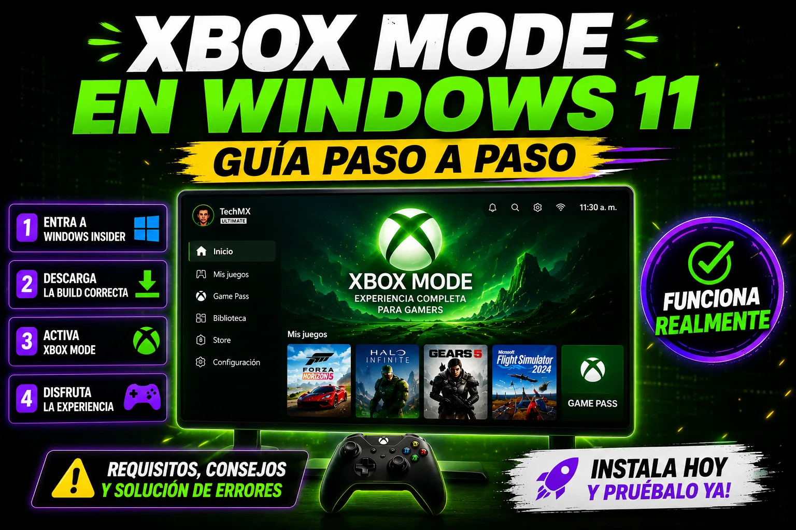

Tutorial Erick Islas Tech
Xbox Mode en Windows 11
Guía paso a paso para aprovechar funciones de Windows.

Guía de apoyo
¡Por fin! En este video te enseño el PASO A PASO COMPLETO para instalar el nuevo Xbox Mode en Windows 11 usando Windows Insider.